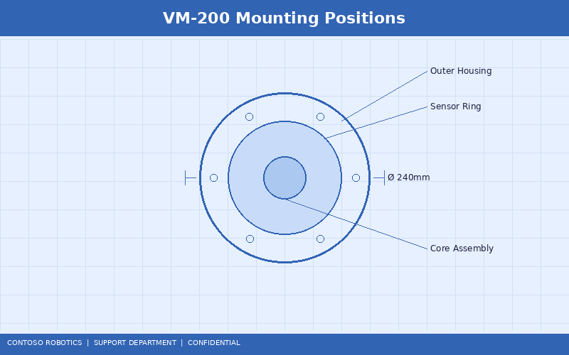
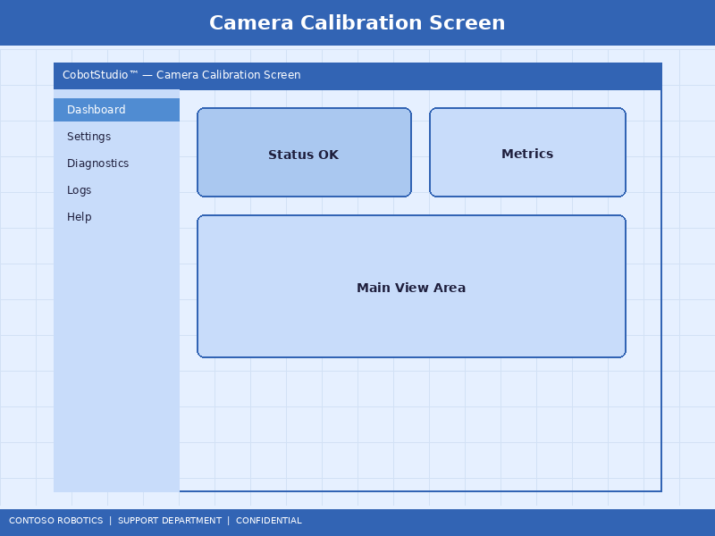
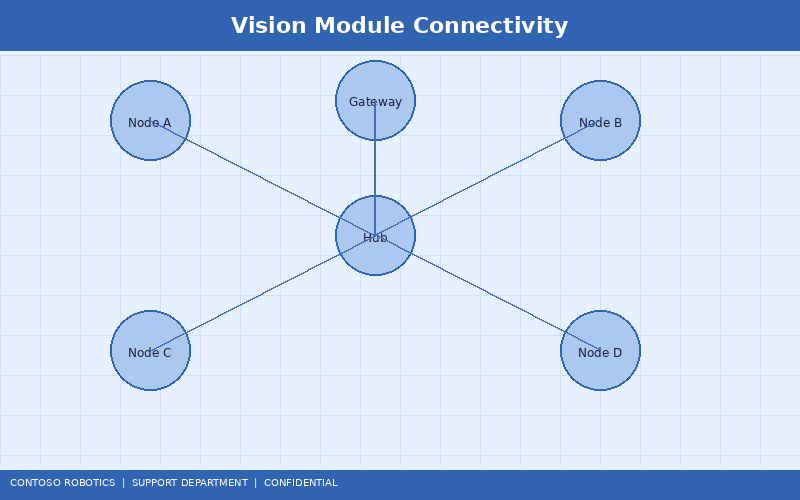

CoBot Vision Module VM-200 Setup Guide
The CoBot Vision Module VM-200 adds advanced machine-vision capabilities to the CoBot Pro 500 and CoBot Pro 700 platforms. This guide covers hardware installation, camera calibration, software configuration, integration testing, and common setup issues. For detailed information about the vision processing algorithms and neural network inference pipeline, refer to the Perception Pipeline Design document in the Engineering documentation.
1. VM-200 Hardware Overview
The VM-200 module consists of the following components:
- Stereo RGB camera pair: 2× 5 MP global-shutter sensors, 60° horizontal field of view, baseline 80 mm
- Structured light projector: 850 nm IR dot pattern for depth sensing, effective range 150–1200 mm
- Edge compute unit: NVIDIA Jetson Orin Nano, 8 GB RAM, running CoBot Vision Runtime v2.1
- Integrated LED ring light: White, 5000K, software-adjustable intensity (0–100%)
- Connector: Single M12 hybrid cable (power + GigE + trigger) to the control cabinet

2. Mounting the VM-200
The VM-200 supports three mounting configurations:
- End-of-arm (wrist-mounted): Attach the VM-200 to the tool flange using the ISO 9409-1-50-4-M6 adapter plate. Torque four M6 bolts to 8 Nm. Update the tool center point (TCP) offset in CoBot OS: X=0, Y=0, Z=95.3 mm, Rx=0, Ry=0, Rz=0.
- Fixed overhead: Mount the VM-200 on a rigid frame 600–1000 mm above the workspace. Use the M6 mounting holes on the rear of the housing. Ensure the camera has an unobstructed view of the entire pick zone.
- Fixed angled-view: Mount on an adjustable arm at 30–60° from vertical. This is optimal for bin-picking applications where top-down views are occluded.
3. Cable Connection
Connect the M12 hybrid cable from the VM-200 to the VISION port on the CoBot Pro control cabinet. The cable carries:
- 24 V DC power (2 A max)
- GigE Vision data (1000BASE-T)
- Hardware trigger signal (for synchronized image capture)
After connection, the VM-200 power LED should turn solid blue within 10 seconds, indicating a successful boot of the CoBot Vision Runtime.
4. Camera Calibration
Accurate calibration is essential for precise object localization. The VM-200 ships factory-calibrated, but recalibration is required after mounting or if accuracy degrades.

- Open CoBot Studio IDE and navigate to Vision → Calibration Wizard.
- Select the calibration method:
- Hand-eye calibration (wrist-mounted): Uses the included 7×5 checkerboard target (30 mm squares). The robot moves to 15 predefined poses while capturing images. Duration: ~5 minutes.
- Fixed-mount calibration (overhead/angled): Place the checkerboard in 9 positions within the field of view. Capture images manually from the teach pendant.
- The wizard computes intrinsic parameters (focal length, distortion coefficients) and extrinsic parameters (camera-to-robot transform).
- Verify the reprojection error. Acceptable values: <0.5 px for the CoBot Pro 500, <0.8 px for the CoBot Pro 700.
- Save the calibration profile. Multiple profiles can be stored for different tool configurations.
5. Software Configuration
Configure the VM-200 vision pipeline in CoBot Studio IDE under Vision → Pipeline Editor:
- Image acquisition: Set resolution (2592×1944 or 1296×972 binned), exposure mode (auto/manual), and trigger mode (continuous/software/hardware).
- Pre-processing: Enable or disable noise reduction, white balance, and HDR multi-exposure fusion.
- Object detection: Select from built-in models (box detection, cylinder detection, custom CAD match) or load a custom ONNX model trained in CoBot Vision Trainer.
- Depth processing: Configure the structured-light depth map parameters: smoothing kernel size (3–11), hole-filling mode, and outlier rejection threshold.
- Output format: Choose between 6-DOF pose (for pick-and-place), 2D bounding box (for sorting), or point cloud (for advanced manipulation).

6. Integration Testing
Before deploying in production, run the following integration tests:
- Connectivity test: Navigate to Vision → Diagnostics → Connectivity. Verify ping latency <1 ms and bandwidth >900 Mbps.
- Accuracy test: Place a reference object at a known position. Command the robot to pick it using vision. Measure the position error with a dial indicator. Expected: <1 mm for wrist-mounted, <2 mm for fixed-mount.
- Cycle time test: Measure the total vision processing time for your pipeline. Typical values: 80–150 ms for 2D detection, 150–300 ms with depth processing.
- Robustness test: Vary lighting conditions (±30% ambient illumination) and verify detection success rate remains >99%.
7. Common Setup Issues
| Symptom |
Likely Cause |
Resolution |
| VM-200 LED stays red |
Boot failure or firmware corruption |
Re-flash firmware using the CoBot Vision Recovery USB tool |
| No image in CoBot Studio |
GigE Vision network misconfiguration |
Ensure the control cabinet VISION port has a valid IP (default 192.168.2.x subnet) |
| High reprojection error (>1.5 px) |
Poor checkerboard detection or vibration during calibration |
Recalibrate with the robot powered and brakes engaged; ensure the checkerboard is flat |
| Intermittent detection failures |
Ambient lighting interference with structured light |
Increase LED ring intensity or switch to HDR mode; avoid direct sunlight on workspace |
| Depth map has large holes |
Reflective or transparent surfaces |
Apply matte spray or switch to stereo-only depth mode (disable structured light) |
For comprehensive vision algorithm details and custom model training, refer to the Perception Pipeline Design in the Engineering documentation. For marketing-level product specifications and comparison charts, see the Vision Module Technical Brief available from Contoso Robotics Marketing.
Document version 2.1.0 | Last updated: 2025-01-15 | Contoso Robotics Technical Support